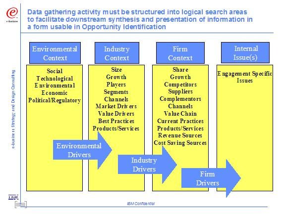

Environmental Context
-
Insights and conclusions about Societal, Technoligical, Environmental, Economic and Political/Regulatory (STEEP)
related to the Focal Area and business objectives of the engagement.
Industry Context
-
Insights and conclusions about current and future industry players within the value net, and the industry forces at
work. e.g., Porter’s 5-Forces Model, related to the Focal Area and business objectives of the engagement.
-
Identification of critical issues driving change across the industry and realignment or rescoping of relationships
among the value net
Firm Context
-
Insights and conclusions about a client’s specific market interactions (Value Exchanges) – Market Share,
Profitability, targeted customer segments, supplier segments, etc, related to the Focal Area and business
objectives of the engagement.
-
Restatement of business strategy, business vision, and supporting e-business strategy
Internal Issues
-
Insights and conclusions about internal issues such as culture, processes, management system, knowledge, etc,
related to the Focal Area and business objectives of the engagement.
Figure 1 below describes the flow of environmental analysis tasks needed to create a robust Executive Briefing
Package (EBP) for Opportunity Identification.

Figure 1: Analysis areas needed for Opportunity Identification EBP
|